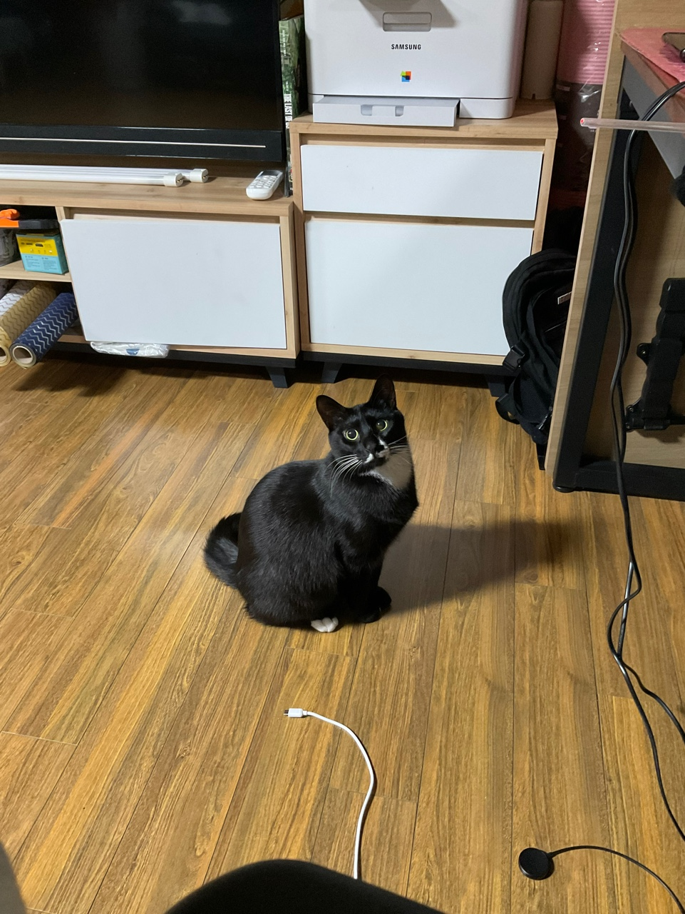

In our house, There is so adorable but savege beast. she always hunt something, even human's foot. After successful hunting, she bites it and confidently returns to her nest. Her front teeth are very small and cute, but when bitten by her molars, it hurts more than expected. Don't lose your heart to the cute little black beast. It's so clever, smart, and so...It's cute.
Don't you think so? Her black hair always shines. The white pattern on the chest connected to the nose is really lovely. Although the tail is shorter than average, it makes her look cuter. If you encounter her green eyes longing for something, you will eventually give it to her. This is because those emerald eyes have the power to control people.